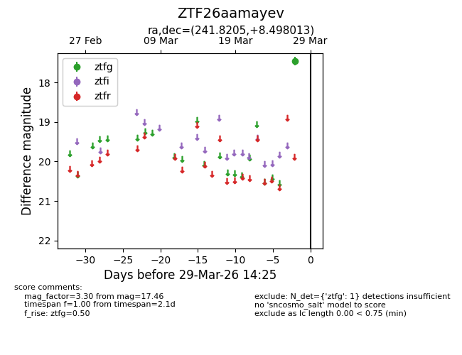
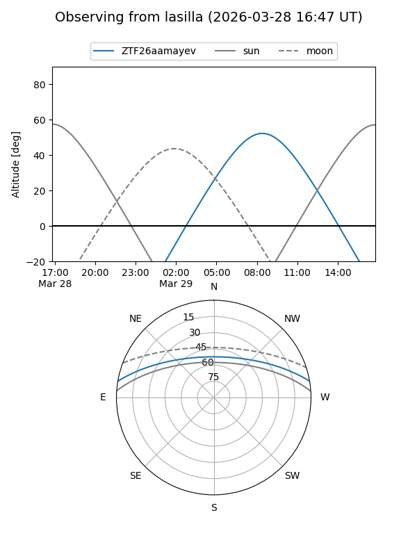
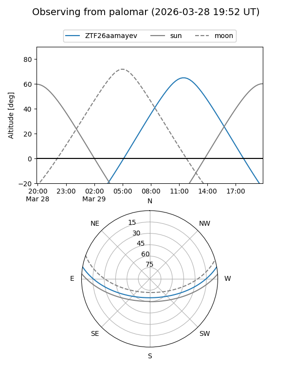

ZTF26aamayev
Target ZTF26aamayev at 2026-03-29 14:28
Aliases and brokers:
FINK: link
Lasair: link
ALeRCE: link
alt names
ZTF26aamayev (ztf,fink_ztf)
Coordinates:
equatorial (ra, dec) = 241.8205,+8.49801
equatorial (HMS+DMS) = 16:07:16.93,+08:29:52.85
galactic (l, b) = (20.4905,+40.18881)
Flags:
Photometry:
last ztfg=17.46
1 ztfg detections
Lightcurve

Visibility


Additional plots